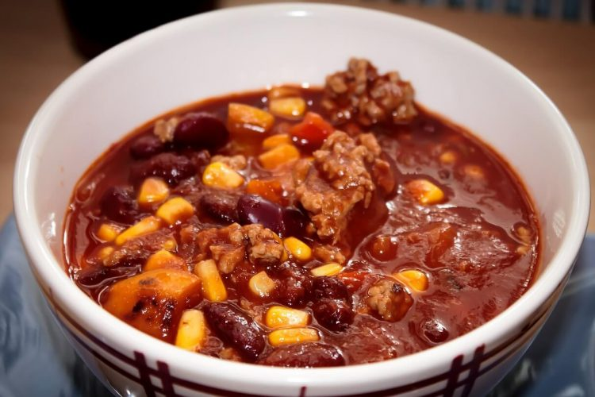

Chili con carne

Description
Tasty beef dish, which can be easily multiplied and freezes well!
Ingridients
- 5 tablespoons vegetable oil
- 1 chile pepper, chopped
- 5 cloves of garlic, chopped
- 2 punds lean ground beef
- 3 cans whole peeled tomatoes with liqued, chopped
- 1,5 tespoon salt
- 1 teaspoon feshly ground balck pepper
- 1,5 teaspoon ground cumin
- 0.5 teaspoon chili powder
- 2 tablespoon paprika
- 2 tablespoon dried oregano
- 2 cans red kidney beans, rinsed and drained
Steps
- In a medium sized stock pot, heat the oil over medium heat. Saute onion, chile pepper and garlic until soft. Add ground beef: cook and stir until meat is browned.
- Pour in tomatoes with liquid, salt, pepper, cumin, chili powder, paprika, oregano, cinnamon sticks, and cloves. Cover and simmer for 45 minutes.
- Stir in kidney beans, and cook another 15 minutes. Remove cinnamon sticks before serving.